Hello, I'm
Meiling Wu.
I’m a PhD candidate in Operations & Decision Technologies at UC Irvine, working at the intersection of optimization, machine learning, and data-driven decision making. My work focuses on developing practical solutions for complex decision problems under uncertainty.
Beyond the work
A few things I enjoy.
Currently Listening
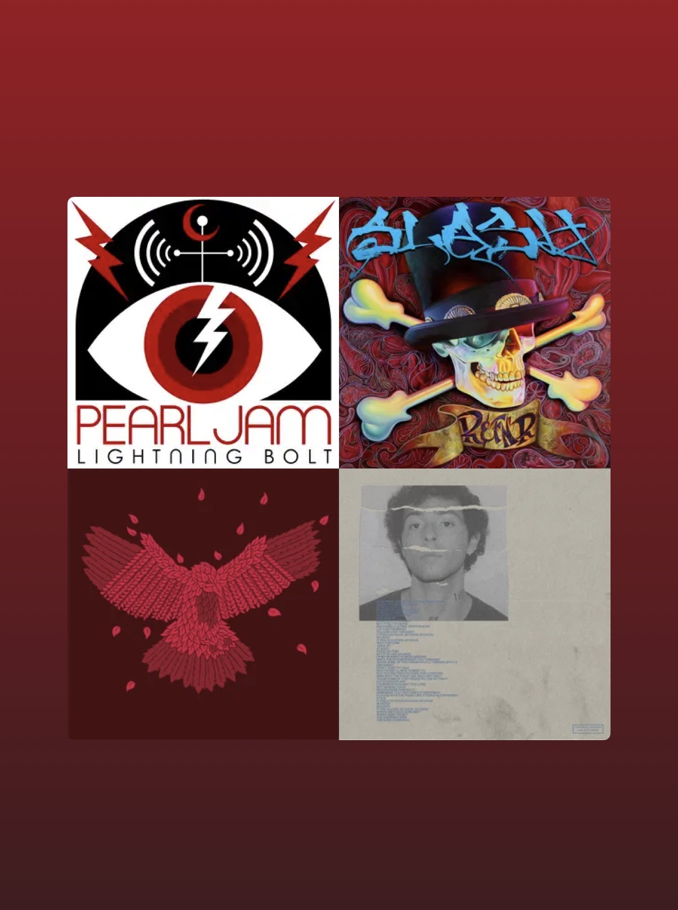
Movies
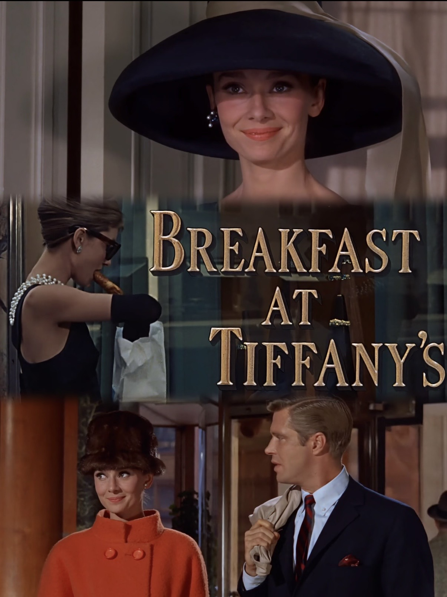
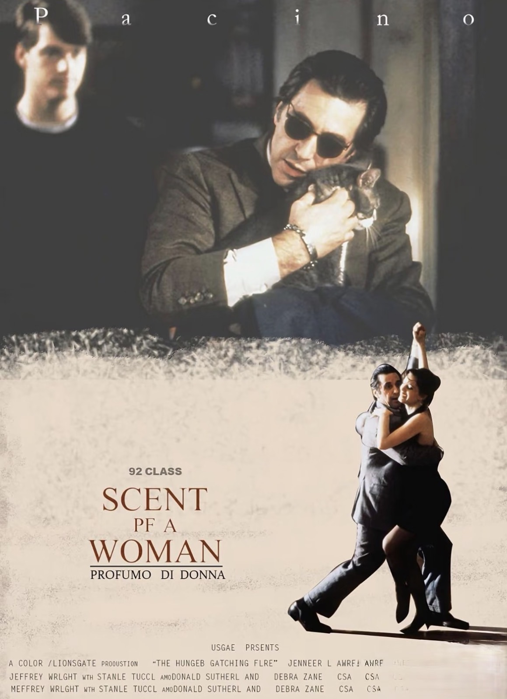
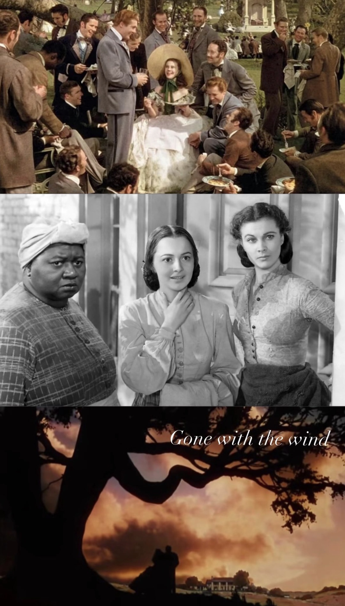
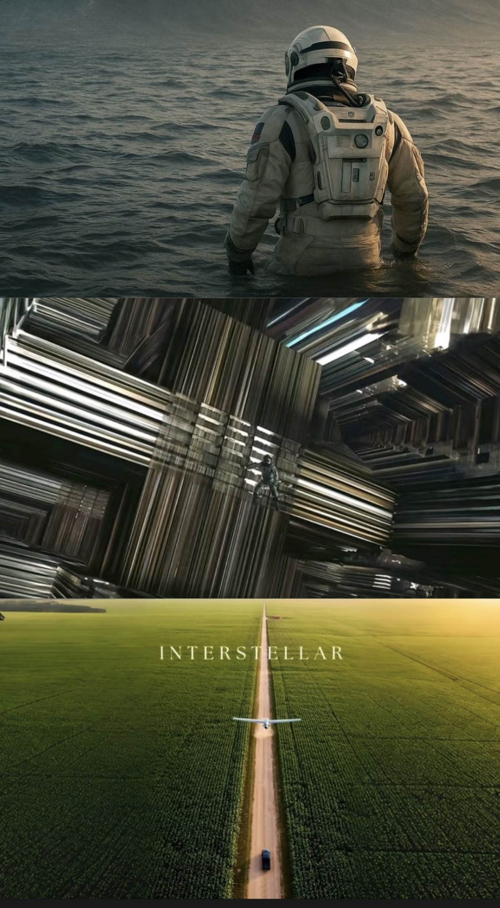
Travel
01 / Moments
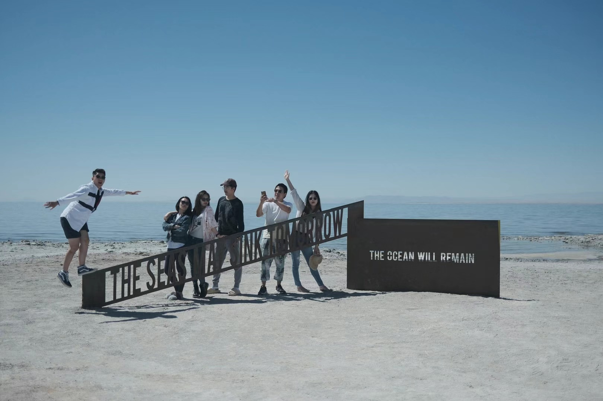
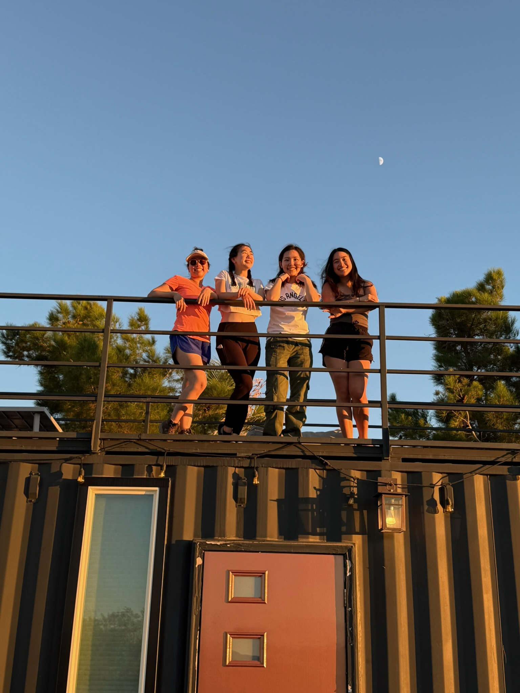
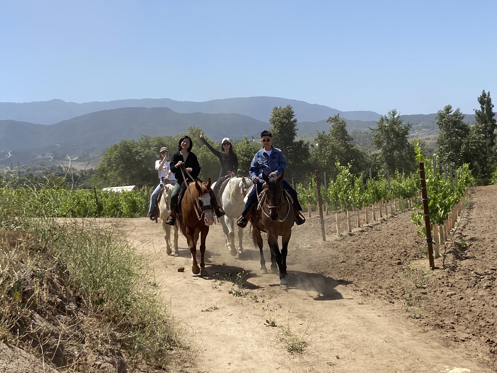
02 / Art of Nature
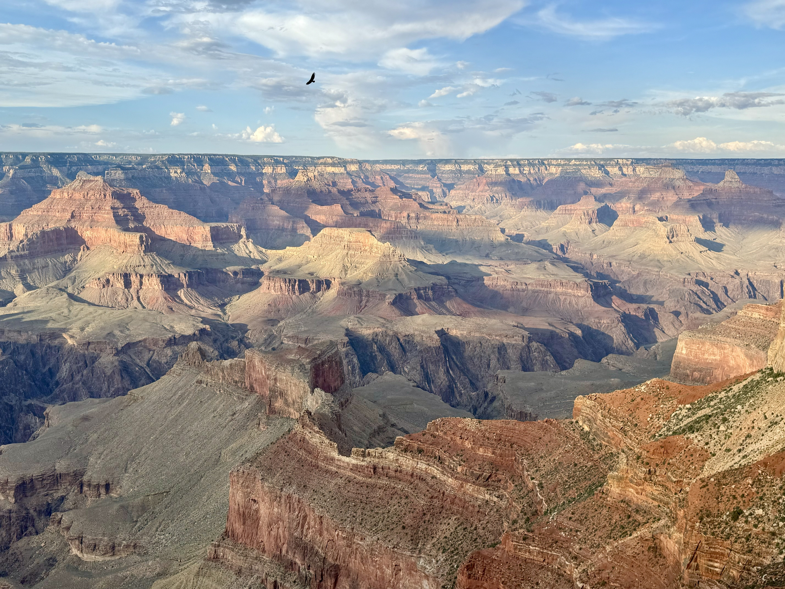
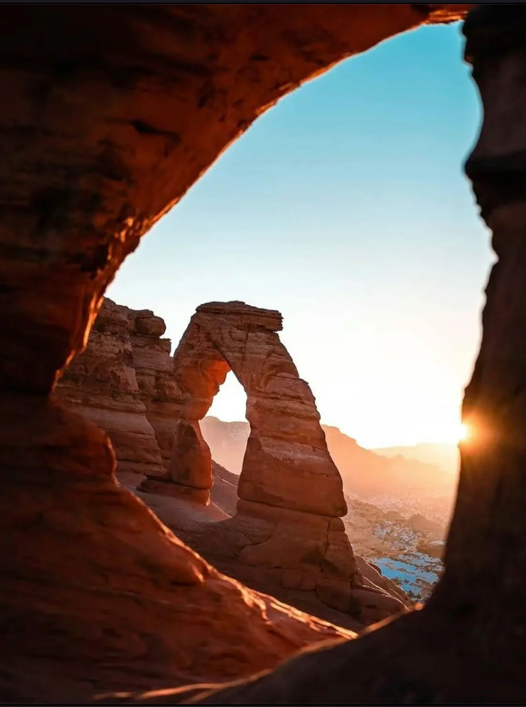
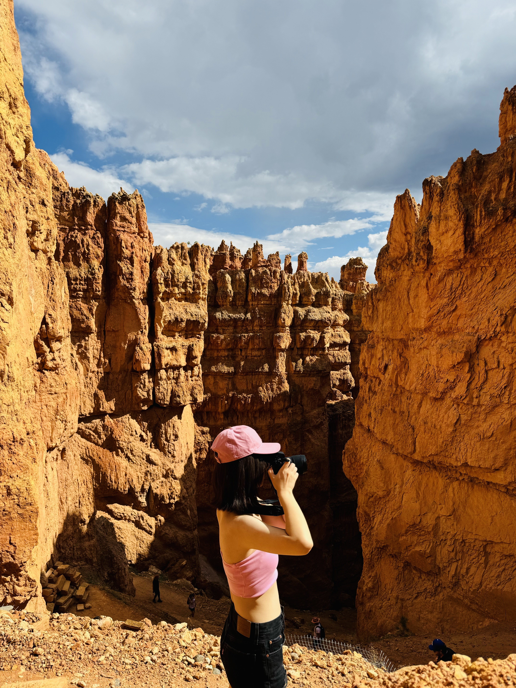
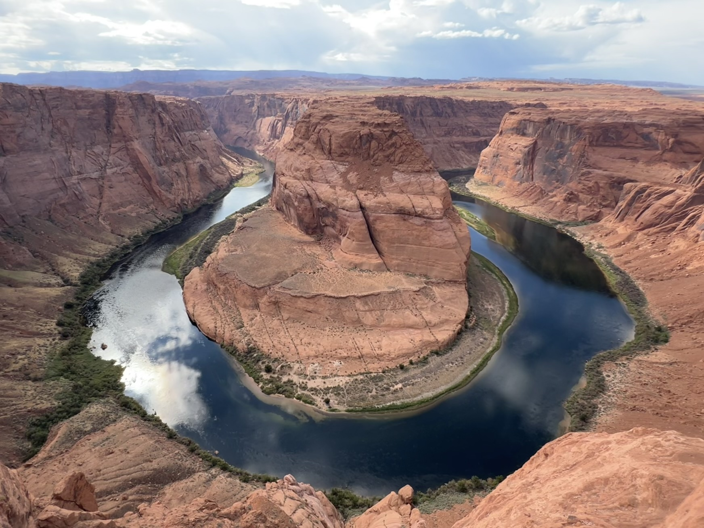
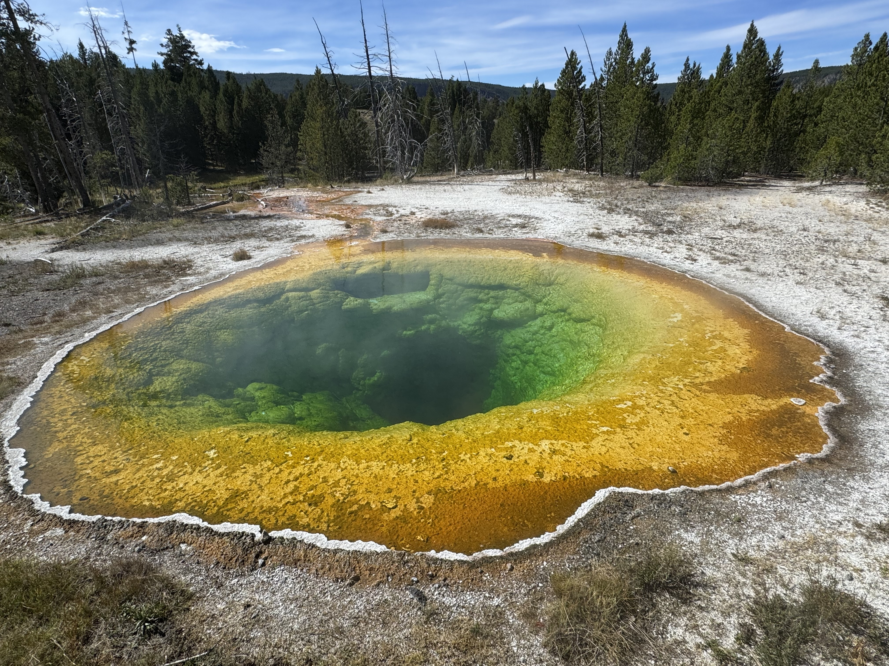
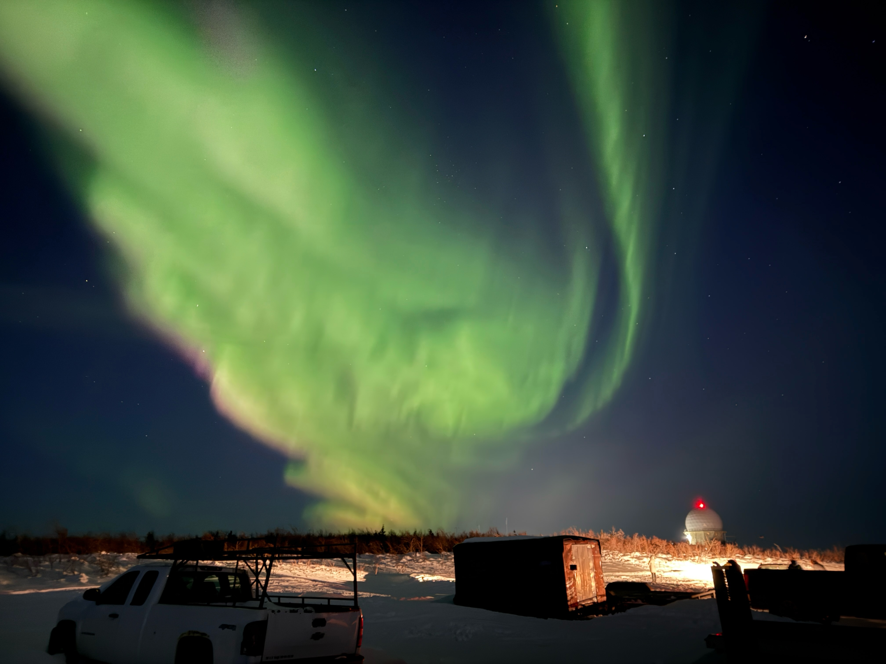